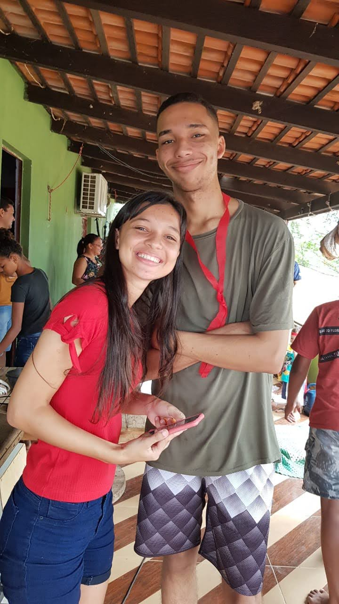

Os Primeiros Vislumbres
Capítulo I
Os Primeiros Vislumbres
Primeiros Anos
Naquela época, os olhares já cruzavam o tempo. Ellen, de vez em quando, ficava a me admirar enquanto eu tocava bateria ou quando explicava algo nas rodas de conversa; eu, por minha vez, a admirava profundamente enquanto ela dançava.
Eram os primeiros vislumbres de uma sintonia que o tempo lapidaria.